数字低音
概述
数字低音是一种用于在通奏低音乐器（如键盘）上表示和弦的简写记谱法，它使用写在低音线条音符下方的一系列数字和其他符号。
向乐谱添加数字低音
输入一个数字
- 选择数字低音所适用的音符；
- 按数字低音快捷键。默认是 Ctrl+G（Mac：Cmd+G）；如果需要，可以在偏好设置：快捷键中更改；
- 在出现的"编辑框"中输入文本。
文本格式
为了使相关的替换和形状组合生效并实现正确对齐，数字低音机制要求输入的文本遵循一些规则（无论如何，这些都是句法上正确的数字低音标记规则）：
- 每个数字只能有一个变音记号（在前或在后），或只能有一个组合后缀；
- 不能同时有变音记号和组合后缀；
- 变音记号可以没有数字（变化三度），但组合后缀不能没有数字。
- 上面未列出的任何其他字符都是不被期望的。
如果输入的文本不遵循这些规则，它将不会被处理：它会被原样存储和显示，不进行任何排版。
数字
数字直接输入。多个数字上下堆叠的组合也直接在一个文本中输入，用 Enter 堆叠它们：
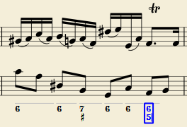
变音记号
变音记号可以使用常规按键输入：
| 要输入： | 键入： |
|---|---|
| 重降号 | bb |
| 降号 | b |
| 还原号 | h |
| 升号 | # |
| 重升号 | ## |
这些字符会在你离开编辑器时自动变成正确的符号。变音记号可以根据所需样式输入在数字之前或之后（当然，对于变化三度，也可以代替数字）；两种样式都能正确对齐，变音记号"悬挂"在左侧或右侧。
组合形状
带斜线的数字或带叉号的数字可以通过在数字后添加 \、/ 或 +（组合后缀）来输入；离开编辑器时会替换为正确的组合形状：
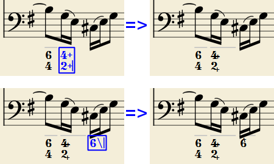
内置字体可以处理组合等价性，优先使用更常见的替换：
1+、2+、3+、4+ 得到
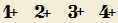
（或
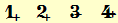
）
而 5\、6\、7\、8\、9\ 得到
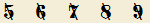
（或
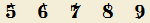
）
请记住，/ 只能与 5 组合；任何其他"带斜线"的数字都会渲染为问号。
+ 也可以用在数字之前；在这种情况下它不会组合，但会正确对齐（'+' 悬挂在左侧）。
圆括号
开括号和闭括号，包括圆括号 '('、')' 和方括号 '[', ']'，可以插入在变音记号前后、数字前后、延续线前后；添加的括号不会干扰主要字符的正确对齐。
注意：(1) 编辑器不检查括号（开、闭、圆、方）是否正确配对。(2) 连续多个括号不符合句法，会妨碍正确识别输入的文本。(3) 数字与组合后缀（'+'、'\'、'/'）之间的括号虽然被接受，但会阻止形状组合。
编辑已有的数字低音
要编辑已输入的数字低音标记，请使用以下选项之一：
- 选中它，或选中它所属的音符，然后按用于创建新数字低音的同一个数字低音快捷键。
- 双击它。
通常的文本编辑框会打开，文本会被转换回普通字符（变音记号用 'b'、'#' 和 'h'，组合后缀分开，下划线等），以便更简单地编辑。
完成后，按 Space 移动到下一个音符，或单击编辑框外部退出，与新建数字低音相同。
按音符、拍或小节导航
数字低音标记的时值通常持续到下一个低音音符或小节结束。这样的数字低音可以使用键盘连续输入。（要移动到中间某个点，或延长数字低音组的时值，请参阅时值）。
- 按 Space 移动到下一个音符，准备输入另一个数字低音标记（或单击编辑框外部退出）。编辑器会前进到下一个音符，或前进到正在添加数字低音的谱表的休止符处。\
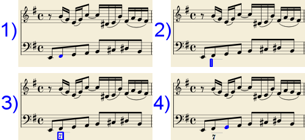
- Shift+Space 将编辑框移动到上一个谱表音符或休止符。
- Tab 将编辑框前进到下一小节的开头。
- Shift+Tab 将编辑框移动到上一小节的开头。
时值
每个数字低音组都有一个时值，由其上方的一条浅灰色线表示（当然，这条线仅供信息参考，不会被打印或导出到 PDF）。
最初，一个组的时值与其所附着音符的时值相同。可能需要不同的时值来将多个组放在单个音符下，或将一个组扩展到跨越多个音符。
为此，下表中的每个按键组合都可以用来 (1) 将编辑框按指定时值前进，以及 (2) 将前一个组的时值设置为新编辑框位置。
在未输入任何数字低音文本的情况下连续按其中几个组合，会反复扩展前一个组。
| 键入： | 得到： |
|---|---|
| Ctrl+1 | 1/64 |
| Ctrl+2 | 1/32 |
| Ctrl+3 | 1/16 |
| Ctrl+4 | 1/8（八分音符） |
| Ctrl+5 | 1/4（四分音符） |
| Ctrl+6 | 二分音符（minim） |
| Ctrl+7 | 全音符（semibreve） |
| Ctrl+8 | 2 个全音符（breve） |
（这些数字与用于设置音符时值的数字相同）
只有在两种情况下，才必须设置精确的数字低音组时值：
- 当多个组放在单个谱表音符下时（没有其他办法）。
- 当使用延续线时，因为线条长度取决于组的时值。
然而，为了插件和 MusicXML 的目的，最好始终将时值设置为预期值。
输入延续线
延续线通过在行末添加一个 '_'（下划线）来输入，然后按延续线所需时值的键盘组合退出编辑框。一个组的每个数字都可以有自己的延续线。要写出以下示例中的延续线：
- 选择数字低音所适用的音符。
- 按数字低音快捷键 Ctrl+G（Mac：Cmd+G）进入编辑框。
- 键入 6 Enter。
- 键入 4 Enter。
- 键入 Ctrl+6 以编辑编辑框并前进光标。
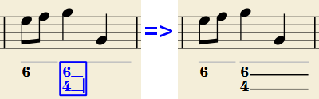
延续线会画满数字低音组的整个时值。
"延长"延续线
偶尔，当一个和弦级数需要跨越两个组保持时，延续线必须与后一个组的延续线相连。示例（均来自 J. Boismortier, Pièces de viole, op. 31, Paris 1730）：
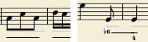
在第一种情况下，每个组都有自己的延续线；在第二种情况下，第一个组的延续线被"延续到"第二个组中。
这可以通过在第一个组的文本行末尾输入多个（两个或更多）下划线 "__" 来实现。
数字低音属性
数字低音符号的文本格式由程序根据样式设置（见下文）自动处理。只能从属性面板调整常规和外观属性。
数字低音样式
乐谱中所有数字低音符号的属性可以在 格式→样式…→数字低音 中设置。

- 字体：这是预设的 "MuseScore Figured Bass"，专门为实现数字低音记谱而设计。
- 大小：选择以磅为单位的字体大小。
- 垂直位置：从谱表顶部到数字低音文本上边距的距离（以空格为单位）。负值向上（数字低音在谱表上方），正值向下（数字低音在谱表下方：需要大于 4 的值才能越过谱表本身）。
- 行高：每个数字低音行的基线之间的距离，以字体大小的百分比表示。
下图直观地展示了每个数值参数：
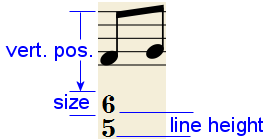
- 对齐：选择垂直对齐方式：使用顶部时，每个组的顶行与主要垂直位置对齐，组从它那里"悬挂"下来（这通常用于数字低音记谱，也是默认值）；使用底部时，底行与主要垂直位置对齐，组"坐"在它上面（这有时用于某些类型的和声分析记谱）：
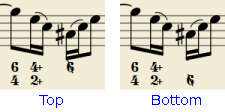
- 样式：在"现代"或"历史"之间选择。两种样式之间的区别如下所示：
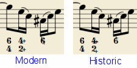
数字低音键盘快捷键
| 键入： | 得到： |
|---|---|
| Ctrl+G | 向选中的音符添加一个新的数字低音组。 |
| Space | 将编辑框前进到下一个音符。 |
| Shift+Space | 将编辑框移动到上一个音符。 |
| Tab | 将编辑框前进到下一小节。 |
| Shift+Tab | 将编辑框移动到上一小节。 |
| Ctrl+1 | 将编辑框前进 1/64，并设置前一个组的时值。 |
| Ctrl+2 | 将编辑框前进 1/32，并设置前一个组的时值。 |
| Ctrl+3 | 将编辑框前进 1/16，并设置前一个组的时值。 |
| Ctrl+4 | 将编辑框前进 1/8（八分音符），并设置前一个组的时值。 |
| Ctrl+5 | 将编辑框前进 1/4（四分音符），并设置前一个组的时值。 |
| Ctrl+6 | 将编辑框前进一个二分音符（minim），并设置前一个组的时值。 |
| Ctrl+7 | 将编辑框前进一个全音符（semibreve），并设置前一个组的时值。 |
| Ctrl+8 | 将编辑框前进两个全音符（breve），并设置前一个组的时值。 |
| Ctrl+Space | 输入一个实际空格；当数字出现在"第二行"时很有用（例如 5 4 -> 3）。 |
| B B | 输入一个重降号。 |
| B | 输入一个降号。 |
| H | 输入一个还原号。 |
| # | 输入一个升号。 |
| # # | 输入一个重升号。 |
| _ | 输入一条延续线。 |
| _ _ | 输入一条延长延续线。 |
注意： 对于 Mac 命令，Ctrl 替换为 Cmd。